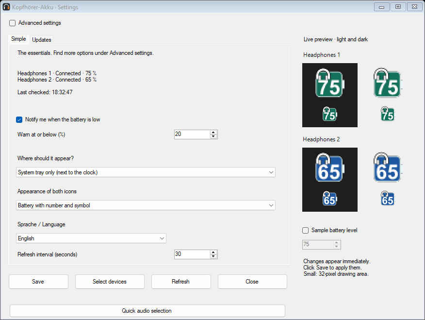
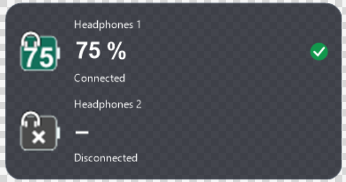
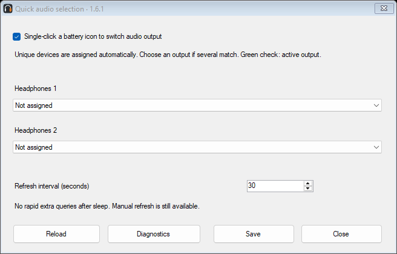
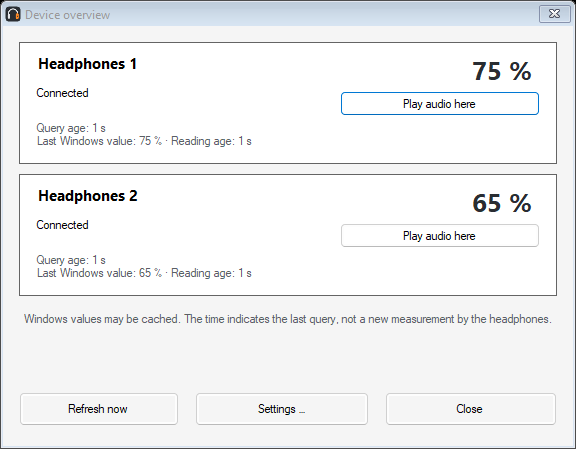

WINDOWS 10 / 11 · FREE · OPEN SOURCE

BleAirDock was previously called Kopfhörer-Akku. Version 1.7.0 introduces the new name and logo and retains the features of 1.6.5. Installer upgrades preserve settings and device assignments. Existing GitHub and update addresses remain valid.
Your headphones.
Battery levels at a glance.
See the battery levels of up to two Bluetooth headphones in your Windows system tray or a desktop widget you can place anywhere. A small app by Aldikiller.
English is included
Version 1.7.0 supports English. Double-click a battery icon, choose Sprache / Language → English and click Speichern (Save). The choice is remembered. German remains the default. Read the full English guide.

Actual English interface · example devicesCurrent version: 1.7.0
New in 1.7.0
Standard and Tiny widgets: two clickable icons, adjustable size, layout, fonts, colors and transparency. Tiny shows device names and status on hover; optional screen-edge snapping. Hide / show widget is available in the menu, with tray access retained while hidden.
Per-headphone warnings with individual thresholds and pulse colors. Pulse warning: 1–90%, period 1–10 seconds, intensity 10–100%, or steady glow. The 30-second test uses the actual tray icon. Pause warnings for 30, 60 or 120 minutes. No extra Bluetooth queries.
Three customizable shortcuts: toggle, activate headphone 1, activate headphone 2. Combine Ctrl, Alt, Shift and Win with A–Z. Initially disabled; unavailable combinations are reported.
Per-headphone volume memory is optional: set the initial target, then the app remembers the volume when leaving a device and restores it during one-click audio selection. Mute and microphone settings stay unchanged.
Import PNG/ICO device images under Names & display → Choose icon. Five SVG and PNG examples are included in docs/symbols. SVG is editable source; PNG/ICO is imported. Tiny can show just the image. Tray images use higher contrast at small sizes; widget images retain their original colors.
Status messages distinguish not connected, unknown connection, Windows provides no battery level, and query failed. Cached values are never presented as a confirmed current measurement.
Switch audio output with one click
1.7.0 · Click a tray battery icon to send Windows audio to that headphone. A green circle with a white check marks the active output. Unique matching devices are assigned automatically; otherwise choose the output once under Quick audio selection. Saved manual assignments are preserved.
 1.6.1
1.6.1Battery checks default to 30 seconds, configurable from 30 to 300 seconds. No rapid extra checks or routine progress banners. App updates are checked manually or optionally at startup.
Installer and portable ZIP · English, German, Spanish, French and Ukrainian · No ads or telemetry
Customize the widget’s size, colors, fonts and transparency. English interface with example device labels.The screenshots below show the earlier version 1.6.1; the current version is 1.7.0.
Version 1.6.1 screenshots
Quick audio selection and device overview with example data. Right-click a tray icon to open the overview. These screenshots show the actual English interface in version 1.6.1, using example devices.

Quick audio selection
Device overviewMake it your own
Choose device labels, colors, symbols and fonts. Adjust the battery shape and display with a live preview.
Stay informed
Low-battery warnings, optional startup with Windows and an optional update check. Updates are never installed automatically.
Get started
Install the app or extract the ZIP, connect your headphones and select them in the app. The English guide explains setup and settings.
Switch the app to English
Open Einstellungen → Allgemein → Sprache / Language, select English and click Speichern. The interface changes immediately and remembers your choice. German is the default; English is available from version 1.2.0.
Before you download
Requires Windows 10 build 19041 or later, or Windows 11, x64, with .NET Framework 4.8. Battery levels depend on the data supplied by Windows and device drivers. Tested with JBL Live 770NC and JLab Rewind 2. Other models are not yet confirmed.
Downloads are currently unsigned. Windows may display a warning. For help, read the user guide. Report reproducible bugs in Issues, or share questions and compatibility reports in Discussions.
Privacy and license
The app has no ads or telemetry. Settings stay on your computer. The optional update check is off by default; when enabled, GitHub receives your IP address and app version, but no device names or battery levels.
Free and open source under the MIT license. Provided without warranty to the extent permitted by law.